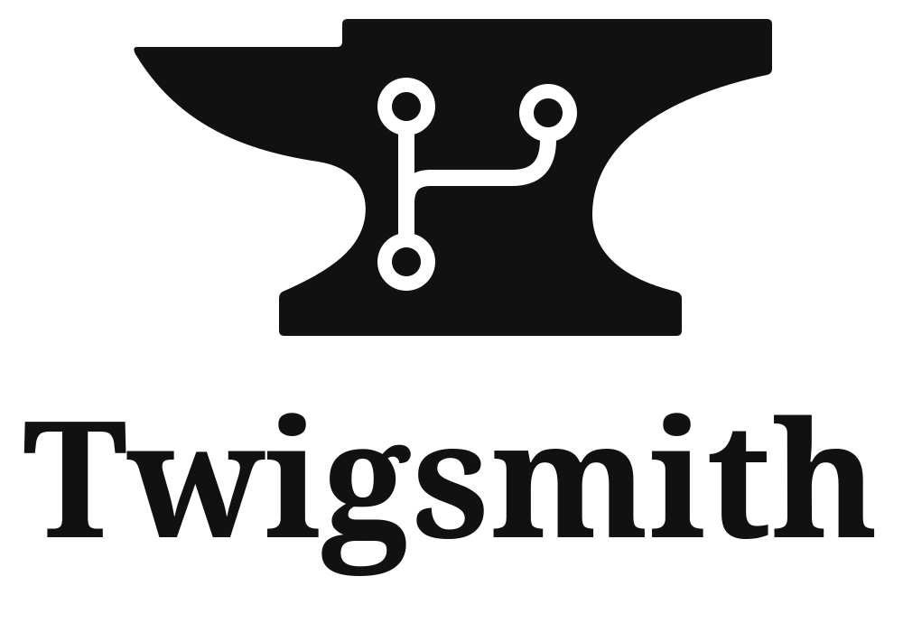

A Git workstream tool
Make room for
the work.
Twigsmith helps you start a branch, preserve progress, and deliver finished work for review or direct integration.

Thoughtful tools for the work between commits.
01 / GET STARTED
Ready when
you are.
Use twigsmith or its equivalent short name, tgi. Both run the same native executable interface.
Release downloads and npm registry installation are not published yet. The instructions below describe the current local candidate.
Requirements
Linux x86_64 GNU with glibc 2.35 or newer, Git 2.45 or newer, and POSIX sh for editor and configured-check paths. The native executable does not require Rust or Node. Node and npm are needed for npm installation and npx.
Verify a native candidate
Keep the archive with its manifest and checksum. From a source checkout, verify the archive and extract it to a new directory:
./dev verify-native ARCHIVE --extract-to DESTINATION
export PATH="DESTINATION/ARCHIVE_DIRECTORY:$PATH"
twigsmith --version
tgi --helpChecksums detect mismatches with the accompanying manifest; they do not independently authenticate the publisher. See the native candidate guide for the full instructions and compatibility limits.
Local npm candidate
Install a candidate tarball with npm install TARBALL, or use npm install --global TARBALL. The package targets Linux x86_64 GNU; confirm the glibc baseline yourself.
02 / GO DEEPER
Good tools leave
you in control.
Use ordinary Git commands for editing history, resolving conflicts, and submitting your work.